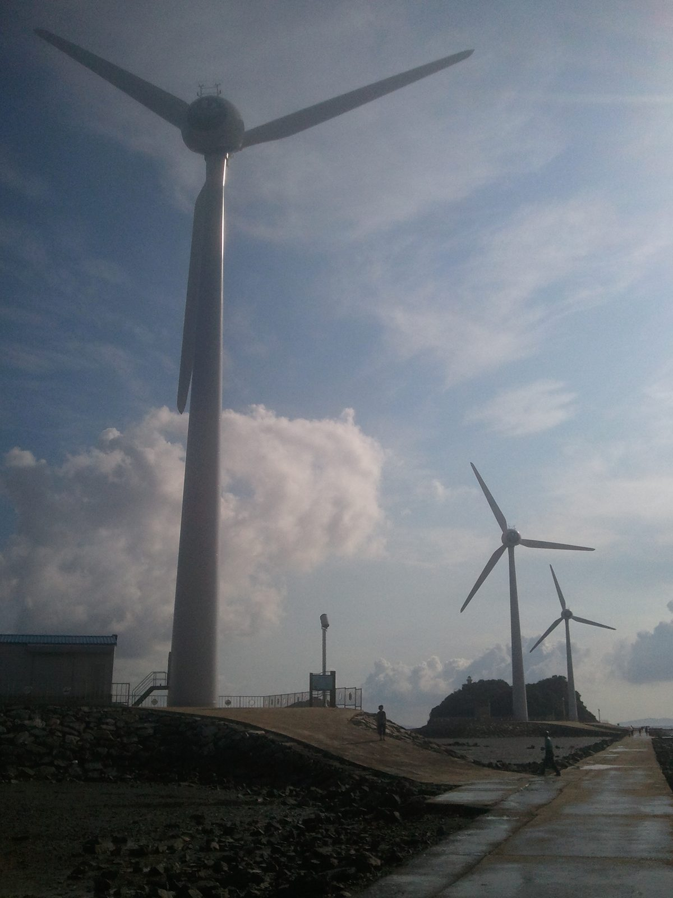

공공주도 해상풍력 전북 철회·제주 유찰 잇따라…인천 IC1 680MW 6조4,612억 원, 사업자 미정 속 재원에 '주민조합대출' 2,584억 원

서부발전 컨소시엄 부안 1GW 참여 철회, 추자 2.37GW·제주 서부 181MW 유찰…iH 자기자본 15%·일반대주단 81%·주민조합대출 4% 계획, 출자 한도는 약 1조1,875억 원
전북과 제주의 공공주도 해상풍력 사업이 사업자 철회와 유찰로 잇따라 멈춰 서면서, 아직 사업자를 정하지 못한 인천 공공주도 해상풍력 IC1(680MW)의 재원 구조에도 우려가 커지고 있다. 전북에서는 한국서부발전이 대표사를 맡은 7개 발전공기업 컨소시엄이 9월 23일 부안 해역 서남권 해상풍력 확산단지2(1GW, 사업비 6조 원) 사업제안서를 낸 뒤 10월 19일 참여 철회를 구두로 알렸고, 전북도는 남은 6개 기관의 참여 의사를 근거로 11월 말 재공고를 추진하지만 정부는 집적화단지 지정 해제까지 검토하고 있다. 제주에서는 추자 해상풍력(2.37GW)이 올해 2월 최종 유찰됐고 제주 서부해상풍력(181MW)도 재공모에서 다시 유찰됐는데, 업계는 계통연계 의무와 연간 1,300억 원에 이르는 도민이익공유금 부담을 사업성을 떨어뜨린 원인으로 보고 있다. 인천도시공사(iH)가 7월 정부에 낸 IC1 사업신청서에는 총사업비 6조4,612억 원을 iH 자기자본 9,692억 원(15%), 신한은행이 모집할 예정인 일반대주단 5조2,336억 원(81%), 주민조합대출 2,584억 원(4%) 등으로 마련하고, 민간사업자를 공모해 컨소시엄 형태의 특수목적법인(SPC)을 세우는 방안이 담겼다. iH의 2025년 결산 자본총계는 3조1,504억 원, 부채비율은 190.4%이고, 지방공기업법 시행령상 부채비율 100~200% 구간에서는 자본금의 25%(약 1조1,875억 원)까지만 다른 법인에 출자할 수 있어 대규모 출자 여력이 빠듯하다는 평가가 나온다. 인천시 관계자는 기후에너지환경부 주도로 국방부와 군 작전성 협의, 전력계통 확보 협의를 진행하고 있다며 "공공주도 해상풍력 사업의 이익을 극대화할 수 있는 방법을 모색하는 중"이라고 말했고, 민간사업자 공모 기준 용역을 올해 안에 마쳐 내년 초 사업자를 선정하겠다고 밝혔다.
시민에너지 관점
IC1 재원계획에서 주민 몫은 6조4,612억 원 가운데 4%인 2,584억 원이고, 그마저 지분이 아니라 '대출'이라는 이름으로 들어가 있어 주민이 사업의 주인이 될지 이자를 받는 채권자에 머물지는 아직 알 수 없다. 공공이 주도하는 사업에 주민 지분까지 늘리면 재원이 더 모자라지 않느냐는 걱정이 나올 수 있지만, iH 출자 한도가 약 1조1,875억 원으로 묶여 있고 전북·제주가 사업자 구성 단계에서 멈춘 만큼 지역 주민과 협동조합의 자본은 오히려 공공 지분을 받쳐 주는 재원이 될 수 있다. 주민이 지분으로 참여해 배당과 의결권을 가지면 이익공유는 사업자가 떠안는 비용이 아니라 사업 수익에서 나오는 당연한 몫이 되고, 제주에서 사업성을 가로막았다는 부담금 논쟁을 비켜 갈 수도 있다. 인천시와 iH는 올해 마무리할 민간사업자 공모 기준에 주민조합대출의 대상과 조건을 밝히고, 이를 지분 참여로 바꿀 수 있는 선택지를 함께 넣어야 한다.
출처: 인천투데이 2026-10-29 이종선 원문 보기
公共主導の洋上風力、全北で撤回・済州で不調が相次ぐ…仁川IC1は680MW・6兆4,612億ウォン、事業者未定のまま財源に「住民組合融資」2,584億ウォン
西部発電コンソーシアムが扶安の1GWから撤退、楸子2.37GW・済州西部181MWは不調…iH自己資本15%・一般融資団81%・住民組合融資4%の計画、出資限度は約1兆1,875億ウォン
韓国の全羅北道と済州の公共主導の洋上風力事業が事業者の撤回や入札不調で相次いで止まり、まだ事業者が決まっていない仁川（インチョン）の公共主導洋上風力IC1（680MW）の財源構造にも懸念が強まっている。全北では、韓国西部発電が代表社を務める発電公企業7社のコンソーシアムが9月23日に扶安沖の西南圏洋上風力拡散団地2（1GW、事業費6兆ウォン）の事業提案書を出した後、10月19日に参加撤回を口頭で伝えた。全北道は残る6機関の参加意思を根拠に11月末の再公告を進めるとしているが、政府は集積化団地指定の解除まで検討している。済州では楸子（チュジャ）洋上風力（2.37GW）が今年2月に最終的に不調となり、済州西部洋上風力（181MW）も再公募で再び不調に終わった。業界は系統連系の義務と、年間1,300億ウォンに上る道民利益共有金の負担を事業性低下の原因とみている。仁川都市公社（iH）が7月に政府へ提出したIC1の事業申請書には、総事業費6兆4,612億ウォンをiHの自己資本9,692億ウォン（15%）、新韓銀行が募集予定の一般融資団5兆2,336億ウォン（81%）、住民組合融資2,584億ウォン（4%）などで賄い、民間事業者を公募してコンソーシアム形態の特別目的会社（SPC）を設立する案が盛り込まれた。iHの2025年決算の資本総計は3兆1,504億ウォン、負債比率は190.4%で、地方公企業法施行令上、負債比率100～200%の区間では資本金の25%（約1兆1,875億ウォン）までしか他の法人に出資できないため、大規模出資の余力は乏しいとの評価が出ている。仁川市の関係者は、気候エネルギー環境部の主導で国防部との軍作戦性の協議や電力系統確保の協議を進めているとし、「公共主導洋上風力事業の利益を最大化できる方法を模索している」と述べ、民間事業者公募基準の用役を年内に終え、来年初めに事業者を選定する目標を示した。
市民エネルギーの視点
IC1の財源計画で住民の取り分は6兆4,612億ウォンのうち4%にあたる2,584億ウォンで、それも持ち分ではなく「融資」という名で入っているため、住民が事業の主人になるのか、利子を受け取る債権者にとどまるのかはまだわからない。公共主導の事業で住民の持ち分まで増やせば財源がさらに足りなくなるのではとの心配も出うるが、iHの出資限度が約1兆1,875億ウォンに縛られ、全北・済州が事業者構成の段階で止まった以上、地域住民と協同組合の資本はむしろ公共の持ち分を支える財源になりうる。住民が持ち分で参加して配当と議決権を持てば、利益共有は事業者が背負うコストではなく事業収益から生まれる当然の取り分となり、済州で事業性を妨げたとされる負担金をめぐる論争も避けられる。仁川市とiHは年内にまとめる民間事業者公募基準に、住民組合融資の対象と条件を明らかにし、それを持ち分参加に切り替えられる選択肢も併せて盛り込むべきだ。
出典: 仁川トゥデイ 2026-10-29 イ・ジョンソン 原文を読む
公共主导海上风电在全北遭撤出、在济州接连流标…仁川IC1项目680MW、6兆4,612亿韩元，运营商未定，资金计划中含"居民合作社贷款"2,584亿韩元
西部发电联合体退出扶安1GW项目，楸子2.37GW和济州西部181MW流标…iH自有资本15%、普通银团81%、居民合作社贷款4%，出资上限约1兆1,875亿韩元
韩国全罗北道和济州的公共主导海上风电项目因运营商撤出和招标流标而接连停滞，外界对尚未确定运营商的仁川公共主导海上风电IC1项目（680MW）的资金结构也愈发担忧。在全北，由韩国西部发电担任牵头方的7家发电国企联合体于9月23日提交了扶安海域西南圈海上风电扩散园区2（1GW，项目费6兆韩元）的项目提案书，随后于10月19日口头通知撤出；全北道以其余6家机构仍有参与意向为由，计划在11月底重新公告，但中央政府甚至在考虑解除集约化园区的指定。在济州，楸子海上风电（2.37GW）今年2月最终流标，济州西部海上风电（181MW）在重新招标中再次流标，业界认为并网义务和每年高达1,300亿韩元的道民收益共享金负担是项目经济性下降的原因。仁川都市公社（iH）7月向政府提交的IC1项目申请书显示，总项目费6兆4,612亿韩元将由iH自有资本9,692亿韩元（15%）、计划由新韩银行牵头组建的普通银团5兆2,336亿韩元（81%）以及居民合作社贷款2,584亿韩元（4%）等筹集，并通过公开招募民间企业，以联合体形式设立特殊目的法人（SPC）。iH 2025年决算的资本总额为3兆1,504亿韩元，负债率190.4%；根据《地方公企业法施行令》，负债率在100%至200%区间的，只能以资本金的25%（约1兆1,875亿韩元）为限向其他法人出资，因此有评价认为其大规模出资能力捉襟见肘。仁川市相关人士表示，目前正在气候能源环境部主导下与国防部进行军事作战影响协商和电网接入协商，"正在探索使公共主导海上风电项目收益最大化的方法"，并称目标是年内完成民间企业招募标准研究，明年初选定运营商。
市民能源视角
在IC1的资金计划中，居民份额仅为6兆4,612亿韩元中的4%，即2,584亿韩元，而且是以"贷款"而非股份的名义计入，居民究竟会成为项目的主人，还是只是收取利息的债权人，目前尚不清楚。有人可能担心，在公共主导项目中再增加居民股份会让资金更加不足，但iH的出资上限被限定在约1兆1,875亿韩元，全北和济州又都卡在组建运营主体的阶段，地方居民和合作社的资本反而可以成为支撑公共股份的资金来源。居民以股份参与并拥有分红和表决权，收益共享就不再是运营商背负的成本，而是来自项目收益的应得份额，也能避开济州那种被认为阻碍项目经济性的负担金争议。仁川市和iH应在年内完成的民间企业招募标准中，明确居民合作社贷款的对象和条件，并加入可将其转为股份参与的选项。
来源: 仁川今日 2026-10-29 이종선（Lee Jong-seon） 查看原文
Public-led offshore wind stalls in North Jeolla and Jeju; Incheon's 680MW IC1, a 6.46 trillion won project still without an operator, counts on 258.4 billion won in 'resident cooperative loans'
Western Power-led consortium quits 1GW Buan project, Chuja 2.37GW and Jeju West 181MW tenders fail; iH plans 15% equity, 81% bank syndicate and 4% resident cooperative loans, but its investment cap is about 1.19 trillion won
With public-led offshore wind projects in North Jeolla and Jeju halted one after another by an operator's withdrawal and failed tenders, concern is growing over the financing of Incheon's public-led IC1 offshore wind project (680MW), which has yet to pick an operator. In North Jeolla, a consortium of seven state power companies led by Korea Western Power submitted a proposal on 23 September for the Southwest Offshore Wind Expansion Complex 2 off Buan (1GW, 6 trillion won) and then orally notified its withdrawal on 19 October; the province plans to re-advertise at the end of November on the grounds that the remaining six bodies still want to take part, but the central government is even considering lifting the cluster designation. In Jeju, the Chuja offshore wind project (2.37GW) finally failed to find a bidder in February, and the Jeju West offshore wind project (181MW) failed again on re-tender, with the industry blaming grid connection obligations and resident benefit-sharing payments of up to 130 billion won a year. The IC1 application that Incheon Urban Development Corporation (iH) submitted to the government in July plans to fund the 6.4612 trillion won total with 969.2 billion won of iH equity (15%), 5.2336 trillion won from a general lending syndicate to be arranged by Shinhan Bank (81%) and 258.4 billion won in resident cooperative loans (4%), among other sources, and to set up a consortium-type special purpose company after a public call for private partners. iH's equity stood at 3.1504 trillion won and its debt ratio at 190.4% at the end of 2025, and under the enforcement decree of the Local Public Enterprises Act a company with a debt ratio of 100 to 200% may invest in other entities only up to 25% of its capital (about 1.1875 trillion won), leading to assessments that its room for a large investment is tight. An Incheon city official said talks on military operational impact with the defence ministry and on securing grid capacity are under way, led by the Ministry of Climate, Energy and Environment, adding that the city is "looking for ways to maximise the benefits of the public-led offshore wind project" and aims to finish a study on criteria for selecting a private partner this year and choose an operator early next year.
Citizen Energy View
In the IC1 financing plan, residents' share is 4% of 6.4612 trillion won, or 258.4 billion won, and even that is entered as a "loan" rather than equity, so it is not yet clear whether residents will become owners of the project or merely creditors collecting interest. Some may worry that adding resident equity to a public-led project would leave it even shorter of money, but with iH's investment capped at about 1.1875 trillion won and the North Jeolla and Jeju projects stuck at the stage of forming an operator, capital from local residents and cooperatives could instead shore up the public stake. If residents join as shareholders with dividends and voting rights, benefit sharing stops being a cost loaded onto the developer and becomes a natural share of project income, sidestepping the kind of levy dispute said to have undermined viability in Jeju. Incheon and iH should spell out who can take part in the resident cooperative loans and on what terms in the private-partner criteria due this year, and include an option to convert them into equity.
Source: Incheon Today 2026-10-29 Lee Jong-seon Read the original